Dein Lieblingsspiel aus Kindertagen
Ohne dass Oma schummelt
Analysiere, plane deine Strategie, bezwinge das Spiel und werde Großmeister.

Die Zank-Patience, die du kennst. Geschmiedet im Feuer des Wettkampfs.
Du kennst Zank-Patience, auch Russian Bank oder Crapette genannt: Wer zuerst alle seine Karten loswird, gewinnt. Auf der Stufe Klassisch spielst du sie hier unverändert.
Um Beobachtung und Denken zu schärfen, bringen die folgenden Stufen nach und nach strengere Regeln. Bei jedem Zug ergeben diese Regeln ein Rätsel: Löst du es, entgehst du einem Stopp! Löst du alle, spielst du um die besten Wertungen.
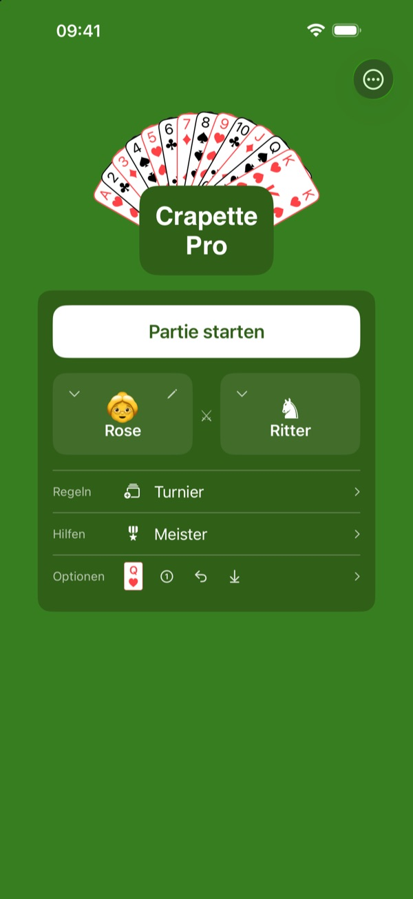
Stell dir deine ideale Partie zusammen.
Sechs Gegner: ein Mensch dir gegenüber, auf demselben Gerät, mit dem Schiedsrichter deiner Wahl; oder der Computer, vom Knappen, der oft Fehler macht, bis zum Algorithmus, der nie einen macht.
Sechs Regelstufen, vom offiziellen Spiel bis Ultimativ✦.
Drei Hilfestufen: Je weniger Hilfe du nimmst, desto wertvoller sind deine Sterne – und desto schwerer zu verdienen.
Das macht 6 × 6 × 3 = 108 Arten zu spielen.
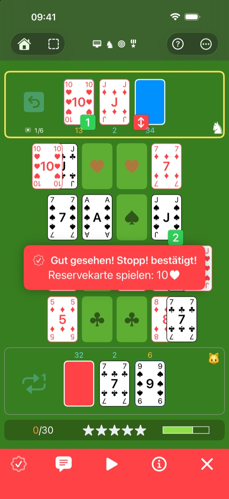
Ein Computer, der Fehler macht – mit Absicht.
Der Knappe, der Ritter und der König machen Fehler, oft, manchmal oder selten: Du musst sie erkennen und Stopp! rufen, wie gegen einen echten Spieler. Und wenn du eine Pause brauchst: Der Algorithmus irrt nie. Schau ihm einfach beim Spielen zu.
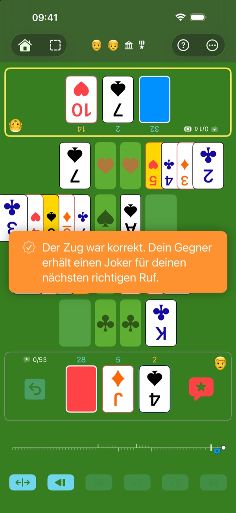
Von Angesicht zu Angesicht, ohne Streit.
Zwei Spieler, ein einziges Gerät zwischen euch, das Spielfeld zu jedem von euch gedreht. Siehst du den Fehler des anderen, ruf Stopp!: Der Computer prüft ihn, ohne Diskussion – oder ist auf Wunsch selbst Schiedsrichter. Aber Vorsicht: Ein falscher Ruf schenkt deinem Gegner einen Joker.
Scharfäugige Enkel, erfahrene Großeltern: alle auf Augenhöhe.
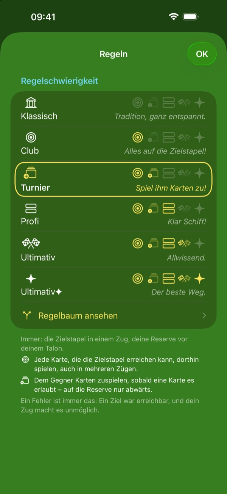
Jeder Zug ist ein Rätsel.
Auf der Stufe Klassisch ist fast jeder Zug erlaubt. Mit jeder Stufe schränkt eine weitere Regel die erlaubten Züge ein, bis nur noch der beste Weg bleibt. Jeder Zug wird zum Rätsel: Die Lösung findest du.
- Klassisch — die traditionelle Zank-Patience mit ihren zwei offiziellen Regeln – Zielstapel in einem Zug, Reserve vor Talon.
- Club — Bring jede Karte auf die Zielstapel, die dorthin kann.
- Turnier — Spiel der Reserve des Gegners Karten zu.
- Profi — Mach möglichst viele Reihen frei.
- Ultimativ — Erreiche das Ziel mit der höchsten Priorität in den wenigsten Zügen.
- Ultimativ✦ — Nimm von zwei gleich kurzen Wegen den, der auch die Regeln mit niedrigerer Priorität beachtet.
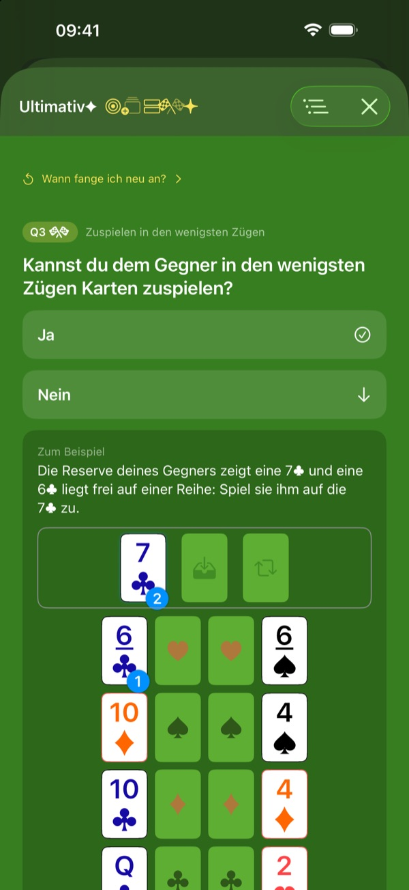
Jeder Zug erklärt sich.
Jedes Stopp!, das du kassierst, jeder Hinweis, den du anforderst, zeigt dir den Zug, den du spielen musst – und die Regel, die ihn verlangt.
Der Regelbaum zeigt, wie die Regeln zusammenhängen: eine Frage nach der anderen, in der Reihenfolge deiner Stufe, bis zum richtigen Zug.
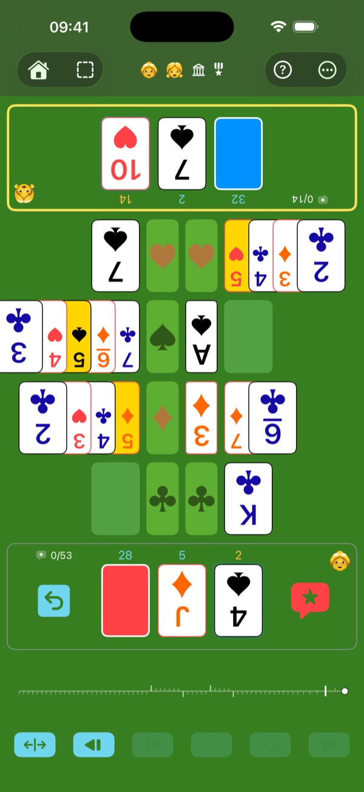
Trainiert das Gehirn, gesund, in jedem Alter.
Beobachten, nachdenken, unter den möglichen Zügen den besten wählen: Jede Partie fordert deinen Kopf. Ohne Timer nimmst du dir Zeit zum Nachdenken, und die Schwierigkeit passt sich dir an. Und das alles beim Spielen: Du trainierst, ohne es zu merken.
Das Spiel, das Eltern ihrem Kind schenken können: Nachdenken, keine grellen Effekte, keine Sucht. Eine Partie kostet echte Mühe: Nach ein oder zwei laufen die Kinder nach draußen zum Spielen.
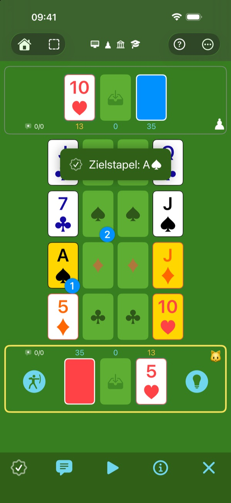
Der Übungsplatz. Hier geht es ums Lernen.
Fang auf der Stufe Klassisch an, als Schüler, mit allen Hilfen. Zielkarten zeigen die möglichen Ziele. Der Hinweis zeigt dir das Ziel mit der höchsten Priorität und den ersten Zug dorthin. „Bester Zug“ spielt für dich. Unsicher bei einer Schaltfläche? Tippe auf „?“: Jedes Element des Spielfelds erklärt sich. Schärfe deinen taktischen Blick auf dem Übungsplatz.
Wie ein hölzernes Übungsschwert lässt dich Hoppla! Treffer einstecken, ohne dass es zu sehr wehtut: Du spielst deinen Zug neu, aber der Fehler zählt trotzdem.
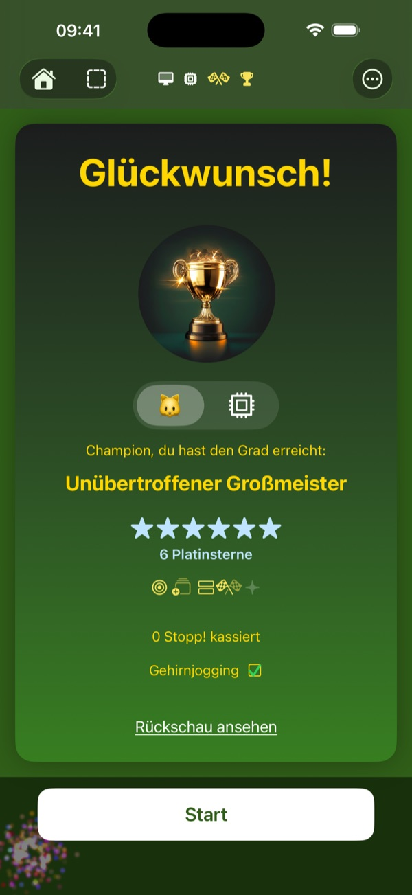
Dein Fortschritt, in Rängen und Sternen.
Die Wertung soll dich motivieren und deinen Fortschritt messen. Verdiene immer angesehenere Ränge und wertvolle Sterne.
Die höchste Belohnung: Platin, für eine fehlerfreie Partie.
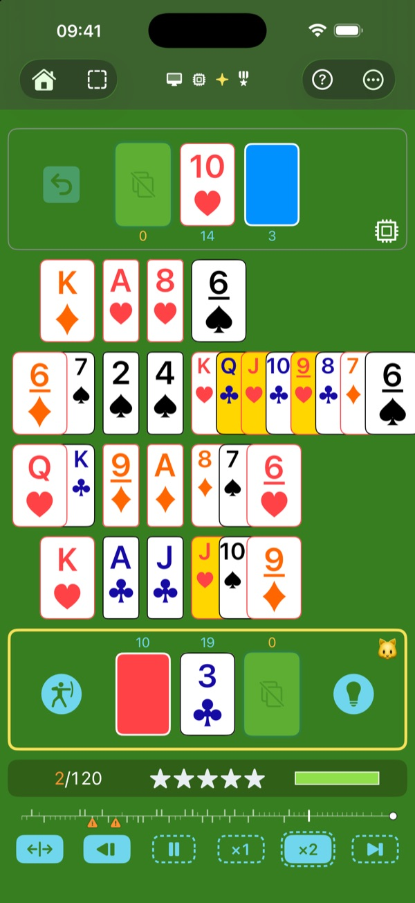
Eine Arena im Scheinwerferlicht, damit dir kein Detail entgeht.
Ein Spiel, das auf Lesbarkeit ausgelegt ist: Selbst Oma hat keine Ausrede mehr.
Wähle deine Karten: Standard, gut lesbar oder gut lesbar an allen vier Ecken. Vier Kartenfarben, klar unterscheidbar in Farbe und Form: Alles bleibt lesbar, auch auf einem kleinen Bildschirm.
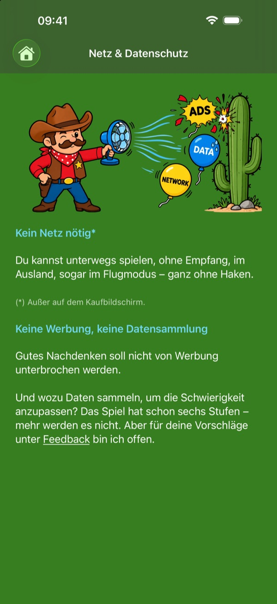
Ein Spiel, gebaut wie ein Athlet.
- Schnell — In kürzester Zeit weiß die Engine, ob dein Zug der richtige ist.
- Leicht — rund 13 MB, im Nu geladen.
- Autark — Zum Spielen ist kein Netz nötig (außer natürlich beim Kauf).
- Diskret — Das Spiel sammelt keine Daten.
- Keine Werbung — Gutes Nachdenken soll nicht unterbrochen werden.
- Keine Sucht — keine Mitteilungen, keine Serie, die du halten musst, kein Zwang zu spielen. Du kommst wieder, wann du Lust hast.
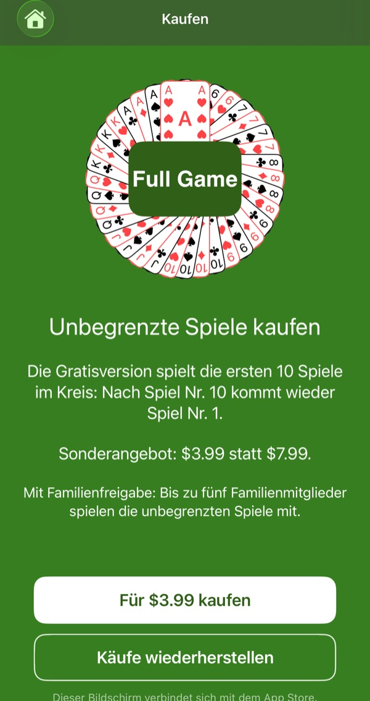
Der grenzenlose Sandkasten.
Kein Abo. Das ganze Spiel lässt sich kostenlos und ohne Zeitlimit ausprobieren – alle Stufen, alle Gegner, alle Hilfen. Bau so viele Sandburgen, wie du willst, aber mit den ersten zehn Spielen, die sich immer wiederholen.
Ein einziger Kauf öffnet neue Spiele, ohne Ende.